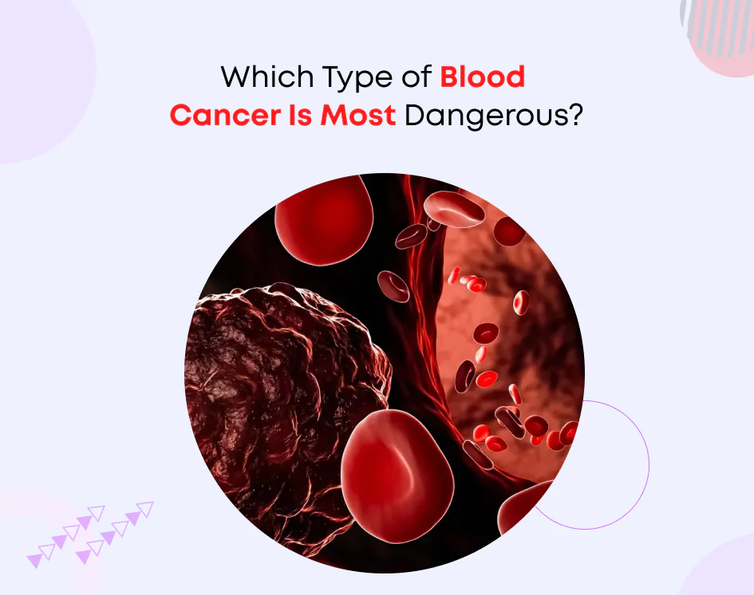

blood Cancer Information
blood cancer is the most common cancer among women worldwide. It occurs when cells in the breast grow out of control...
Some common signs include lumps in the breast, changes in the shape or size of the breast, and skin changes...
Early detection through regular screenings such as mammograms can save lives. Treatment options include surgery, radiation, chemotherapy, and hormonal therapy...

Types of blood cancer
The three main types of blood and bone marrow cancer are leukemia, lymphoma and myeloma.
Leukemia is a blood cancer that originates in the blood and bone marrow.
It occurs when the body creates too many
abnormal white blood cells and interferes with the bone marrow’s ability to make red blood cells and platelets.
Non-Hodgkin lymphoma is a blood cancer that develops in the lymphatic system from cells called lymphocytes,
a type of white blood cell that helps the body fight infections.
Hodgkin lymphoma is a blood cancer that develops in the lymphatic system from cells called lymphocytes.
Hodgkin lymphoma is characterized by the presence of an abnormal lymphocyte called the Reed-Sternberg cell.
Multiple myeloma is a blood cancer that begins in the blood’s plasma cells,
a type of white blood cell made in the bone marrow. Learn about the stages of multiple myeloma.
Less common forms of blood and bone marrow cancers,
and associated disorders, include those listed below.
Myelodysplastic syndromes (MDS): These are rare conditions that may result from damage to blood-forming cells in the bone marrow.
Myeloproliferative neoplasms (MPNs): These rare blood cancers occur when the body overproduces white blood cells,
red blood cells or platelets.
The three main subcategories are essential thrombocythemia (ET), myelofibrosis (MF) and polycythemia vera (PV).
Amyloidosis: This rare disorder, characterized by the buildup of an abnormal protein called amyloid,
is not a form of cancer. But it is closely associated with multiple myeloma.
Waldenstrom macroglobulinemia: This is a rare type of non-Hodgkin lymphoma that starts in B cells.
Aplastic anemia: This rare condition occurs when key stem cells are damaged and can only be treated with a bone marrow transplant